Releasenotes eBlinqx Hypotheekadvies – Maart 2026
📢 Live in eBlinqx Hypotheekadvies!
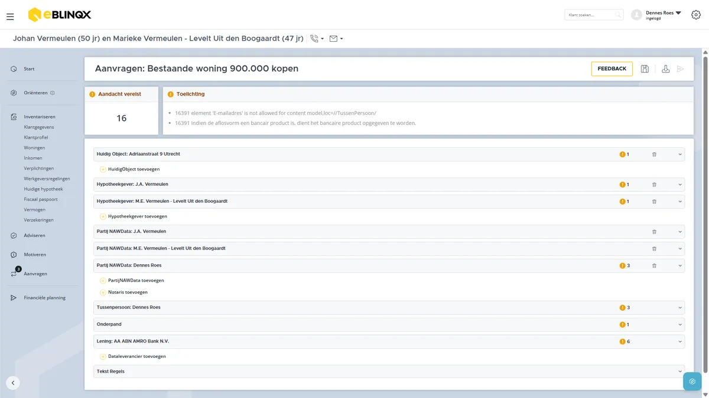
🐞 IT-30121: Duidelijkere foutmeldingen in het HDN-formulier
Het HDN-formulier werkt nu nog duidelijker en betrouwbaarder. Foutmeldingen bij velden worden direct en consistent weergegeven, zodat je precies ziet waar nog actie nodig is. Zodra je een veld corrigeert, verdwijnt de melding automatisch. Hierdoor weet je altijd zeker dat je aanvraag compleet is voordat je deze verzendt. Dat maakt het invullen sneller, duidelijker en voorkomt onnodige onzekerheid tijdens het aanvragen.
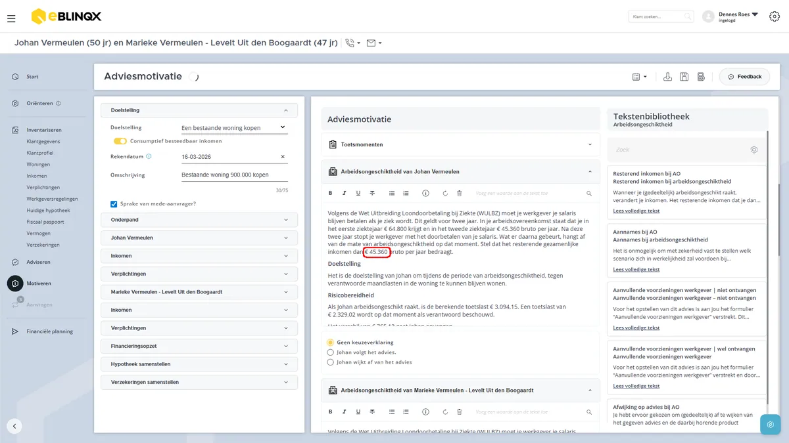
⚙️ IT-30151: Verbeterde inkomensweergave bij arbeidsongeschiktheid
Bij adviezen op basis van de GHF wordt in de sectie arbeidsongeschiktheid nu het juiste inkomen gebruikt. Hierdoor sluit de motivatie in jouw adviesrapport beter aan op de volledige inkomenssituatie van de aanvrager en kun je vertrouwen op een nog correctere rapportage.
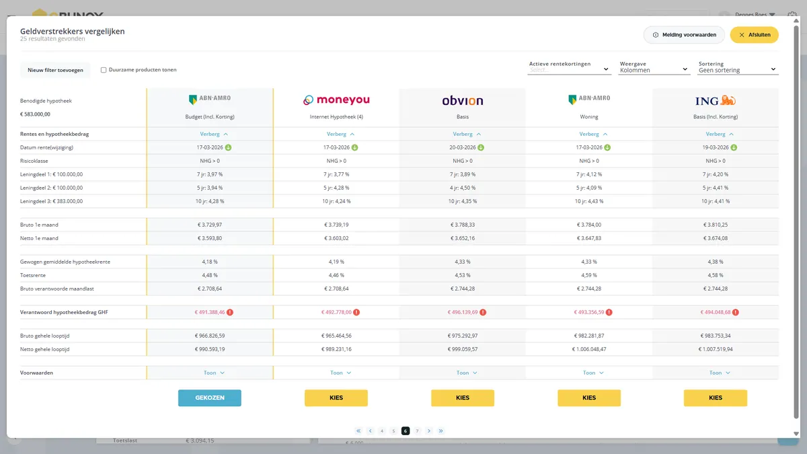
🐞 IT-30150: Opruiming van niet-werkende ‘Renteblad’ link
De niet-werkende ‘Renteblad’ optie is verwijderd, zodat je alleen nog relevante en functionele onderdelen ziet. Dit zorgt voor een duidelijkere workflow en voorkomt dat je op doodlopende paden terechtkomt.
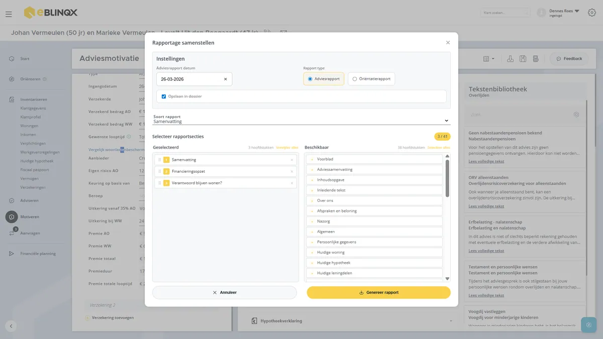
🆕 IT-30005: Stel jouw adviesrapport nu volledig zelf samen
Je kunt nu zelf bepalen hoe jouw adviesrapport is opgebouwd. Met het nieuwe drag-and-drop systeem kies je eenvoudig welke hoofdstukken je gebruikt én in welke volgorde ze verschijnen. De software nummerert de hoofdstukken automatisch en maakt direct een overzichtelijke inhoudsopgave voor je. Zo stel je sneller een rapport samen dat perfect aansluit bij jouw advies en werkwijze. Bovendien wordt de titel die jij aan het rapport geeft automatisch bovenaan het adviesrapport geplaatst.
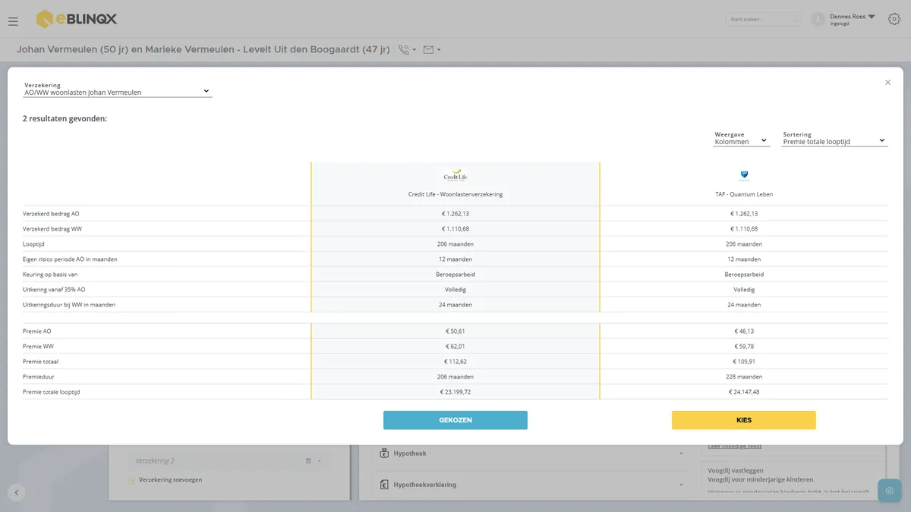
🐞 IT-30192: Betrouwbare premieberekening voor Credit Life woonlastenverzekering
De premieberekening voor de woonlastenverzekering van Credit Life is gecorrigeerd, zodat je nu altijd kunt rekenen op een juiste en consistente premie. Dit zorgt voor meer zekerheid in je advies en voorkomt handmatige controles achteraf.
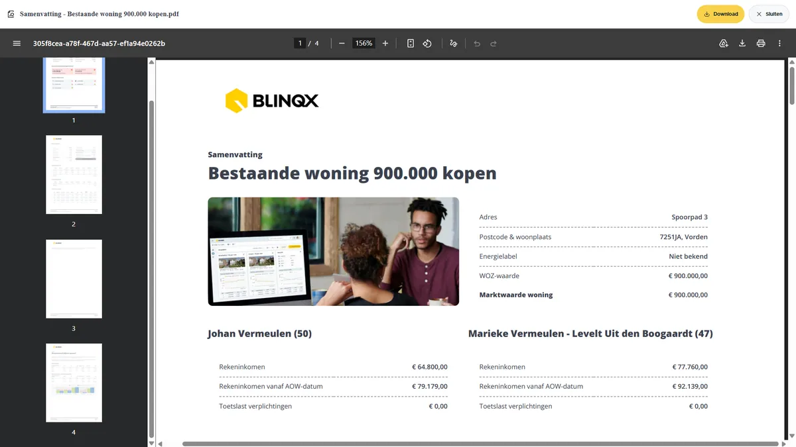
⚙️ IT-30201: Grotere rapportweergave in de PDF-reader
Je kunt rapporten nu in een veel ruimere weergave bekijken voordat je ze downloadt. Daardoor is de inhoud prettiger leesbaar en kun je documenten eenvoudiger controleren op het volledige scherm. Dat maakt het werken in de software comfortabeler en overzichtelijker.
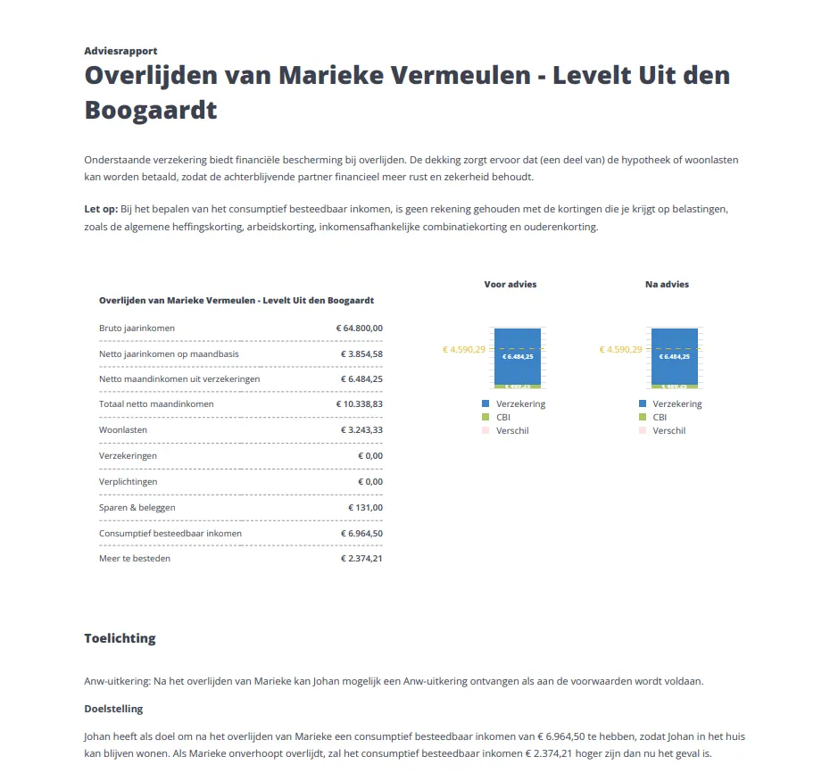
🐞 T-29334: Duidelijkere toelichting bij thema overlijden op basis van CBI
In het thema overlijden op basis van Consumptief Besteedbaar Inkomen is de toelichting op meerdere punten verbeterd. Zo wordt overlijden voortaan netjes met een kleine letter weergegeven, wordt een regel met een benodigd bedrag van € 0 niet meer getoond en sluiten de toelichtende zinnen logischer op elkaar aan op één regel. Ook wordt nu correct weergegeven of de langstlevende na overlijden meer of minder te besteden heeft. Zo krijg je in jouw adviesrapport een nog duidelijkere en prettigere weergave, waardoor je sneller de juiste informatie ziet en jouw advies nog makkelijker kunt toelichten aan de klant.
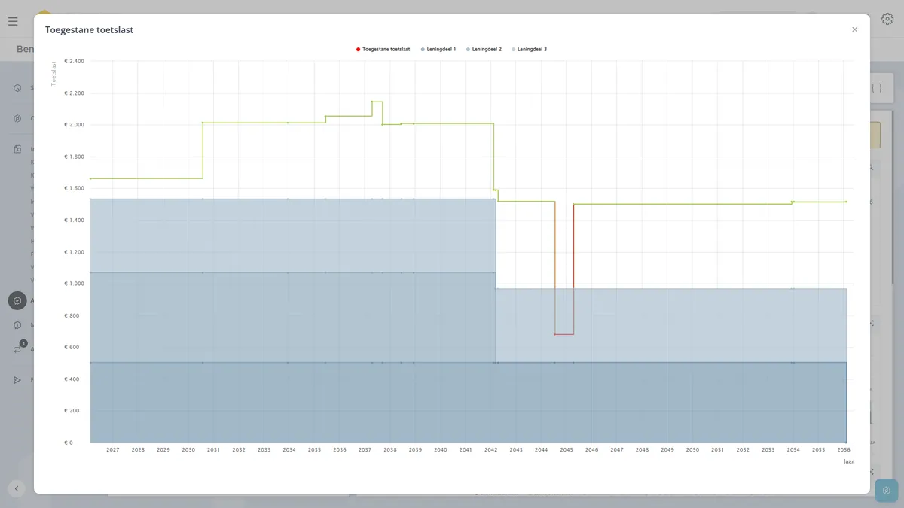
⚙️ IT-29958: Correcte verwerking brutering fictieve last bij vervallen renteaftrek
De berekening van de maximale hypotheek is verbeterd voor situaties waarin de renteaftrek binnen 10 jaar vervalt. De brutering van de fictieve last wordt nu toegepast vanaf het daadwerkelijke moment van vervallen renteaftrek. Hierdoor sluit de uitkomst beter aan op de praktijk en toets je nog nauwkeuriger of de maandlasten op elk toekomstig moment betaalbaar blijven. Dit zorgt voor een realistischere leencapaciteit en meer vertrouwen in jouw advies.
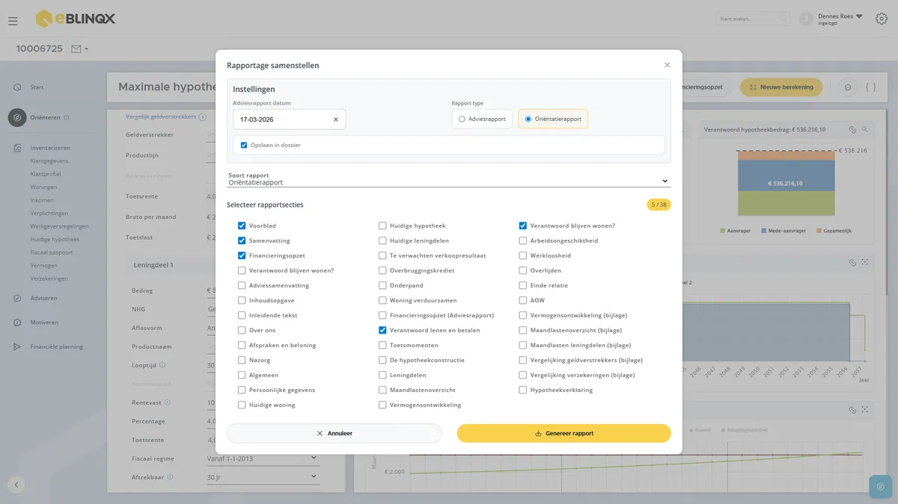
🐞 IT-29602: Soepeler rapportdownload en dossieropslag in Oriënteren
Binnen Fastlane Oriëntatie is het proces voor de doelstelling Maximale hypotheek berekenen verbeterd. Je kunt nu weer soepel verder in de flow, doordat een blokkade rondom een ontbrekend verplicht veld is opgelost. Hierdoor werkt het downloaden van het rapport en het opslaan van het dossier weer zoals je mag verwachten, zodat je jouw oriëntatie sneller en prettiger kunt afronden.
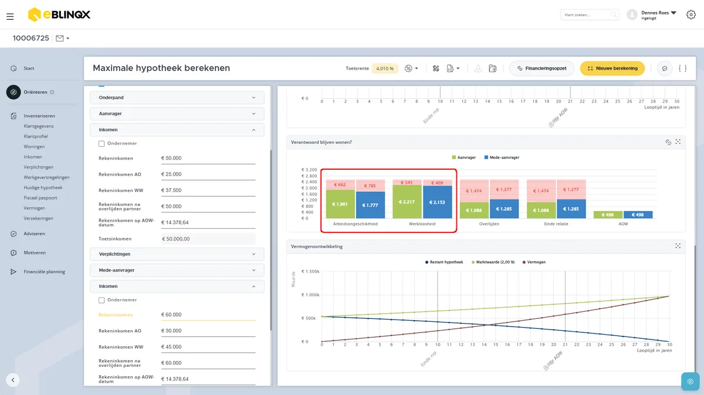
🐞 IT-29731: Staafdiagrammen Arbeidsongeschiktheid & Werkloosheid weer zichtbaar
Je ziet de staafdiagrammen voor Arbeidsongeschiktheid en Werkloosheid nu weer direct in het visueel overzicht bij de aanvrager, zowel bij advies op basis van GHF als CBI. Daarnaast zijn deze thema’s weer netjes doorgerekend in de financiële analyse, zodat het overzicht en de verdiepende schermen altijd dezelfde, kloppende uitkomsten tonen.
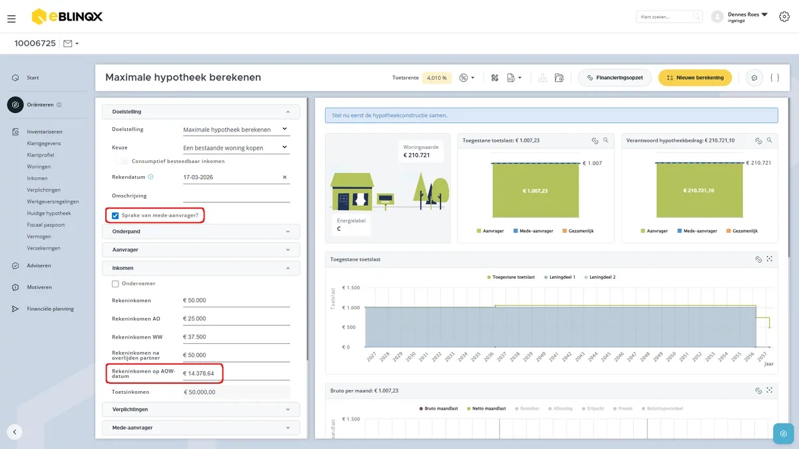
🐞 IT-29713: Correcte AOW-prefill bij samenkopend stel
Bij de doelstelling ‘Maximale hypotheek berekenen’ wordt bij een samenkopende huishoudsituatie het AOW-bedrag bij het rekeninkomen op AOW-datum nu gebaseerd op de juiste dossiersamenstelling. Hierdoor sluiten de AOW-regels direct beter aan op de werkelijke situatie—zo hoef jij minder te controleren en kun je sneller door met je advies.
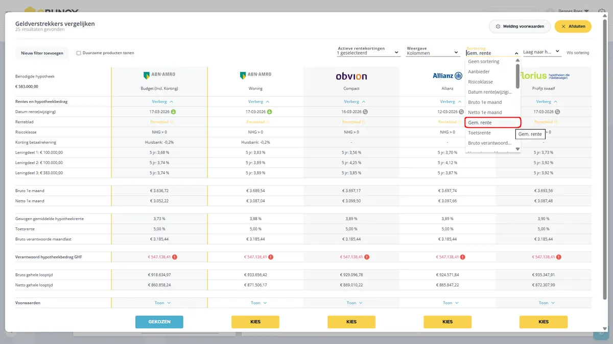
⚙️ IT-30002: Sneller geldverstrekkers vergelijken met sorteren op gemiddelde rente
Je kunt nu in het overzicht Geldverstrekkers vergelijken eenvoudig sorteren op de kolom Gem.rente. Hierdoor zie je direct welke geldverstrekkers de laagste of hoogste gemiddelde rente hebben. Dit maakt het vergelijken sneller en helpt je nog efficiënter de juiste optie voor jouw klant te vinden.
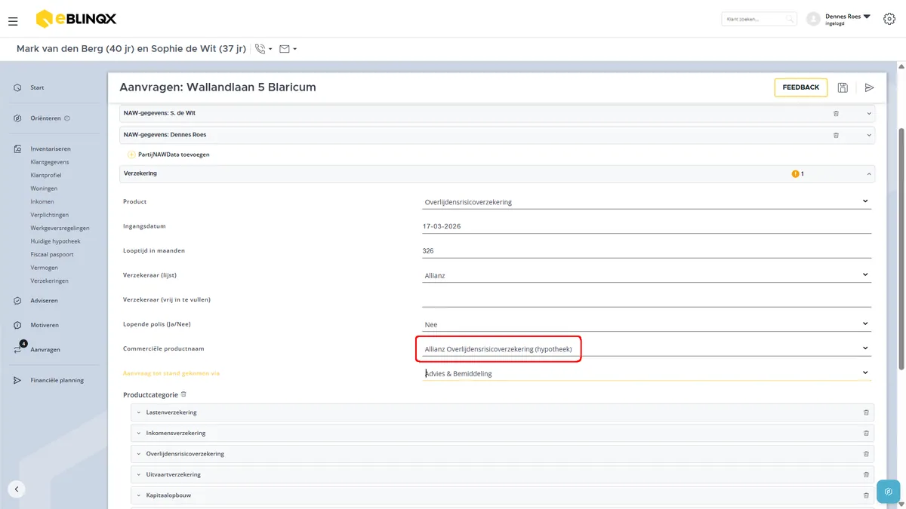
🐞 IT-30033: Correcte Allianz overlijdensrisicoverzekering standaard geselecteerd
Bij het aanvragen van een Allianz overlijdensrisicoverzekering selecteert de software nu automatisch het juiste hypotheekproduct. Hierdoor zie je direct het correcte tarief voor hypotheekgebonden overlijdensrisicoverzekeringen en voorkom je dat je onbedoeld een te hoog tarief aan je klant presenteert.
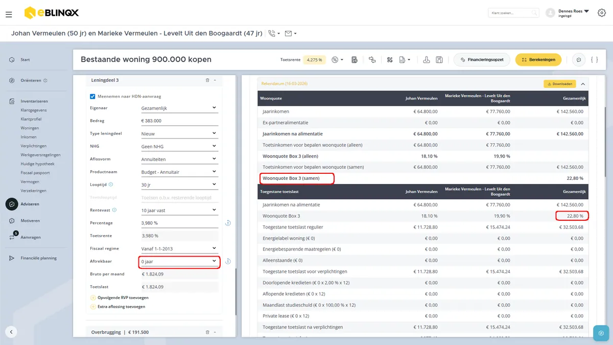
⚙️ IT-29702: Duidelijkere weergave bij volledige box 3 hypotheektoets
Wanneer een hypotheek volledig in box 3 valt, sluit de weergave in de Financiële analyse nu volledig aan op de juiste box 3 woonquotes. Je ziet geen verwarrende verwijzingen naar box 1 meer, waardoor direct duidelijk is hoe de toetsing is uitgevoerd. Dit zorgt voor meer overzicht, minder ruis en extra vertrouwen in jouw adviesberekening.
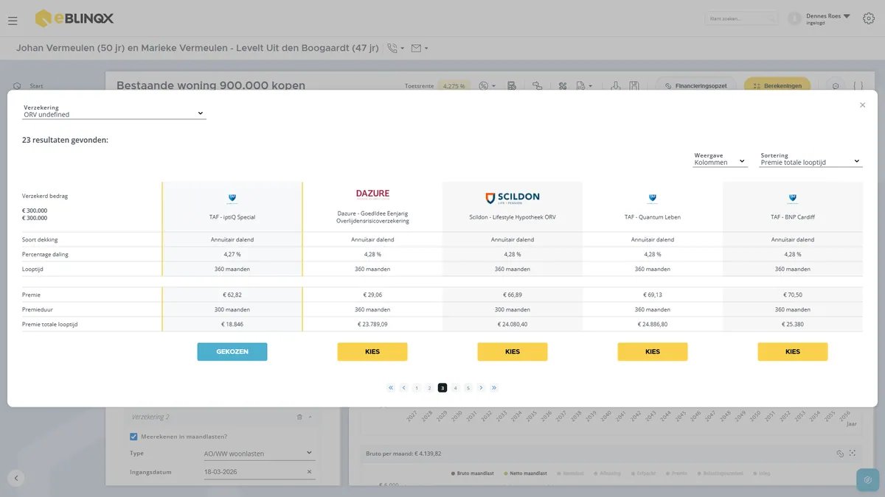
🐞 IT-29918: Correcte ORV-premie van Scildon bij verzekeren op twee levens
Vanaf nu zie je bij een ORV van Scildon op twee levens weer een premie die netjes aansluit op de onderliggende tariefberekening. Dat betekent een betrouwbaarder maandbedrag in je advies én minder handmatige controles achteraf.
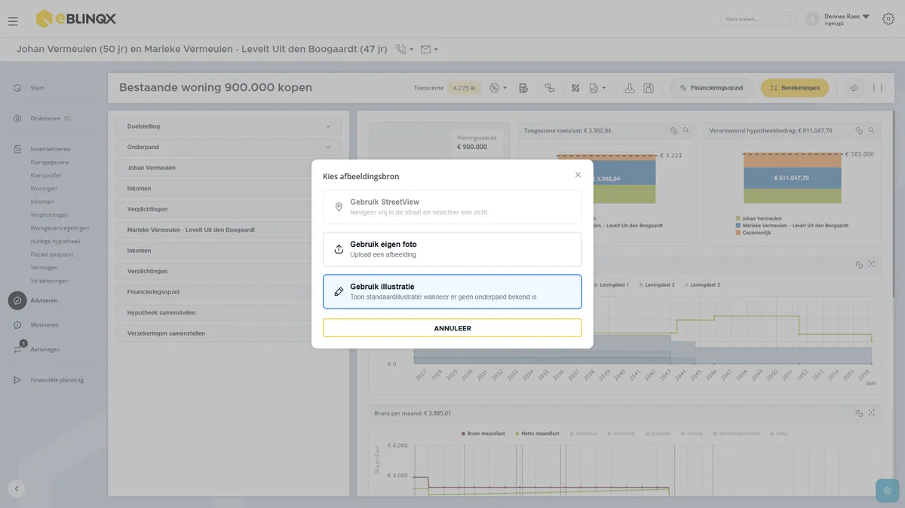
🐞 IT-30097: Adviesrapport toont nu altijd de juiste keuze bij het onderpand
Het adviesrapport volgt nu precies jouw gekozen instelling bij het onderpand. Selecteer je “gebruik illustratie”? Dan zie je in het rapport ook daadwerkelijk de illustratie. Kies je deze optie niet, dan wordt netjes de Google foto getoond. Zo ben je verzekerd van een rapport dat volledig aansluit op jouw berekening, ook bij bestaande dossiers. Dat werkt wel zo betrouwbaar en voorkomt onnodige controles achteraf.
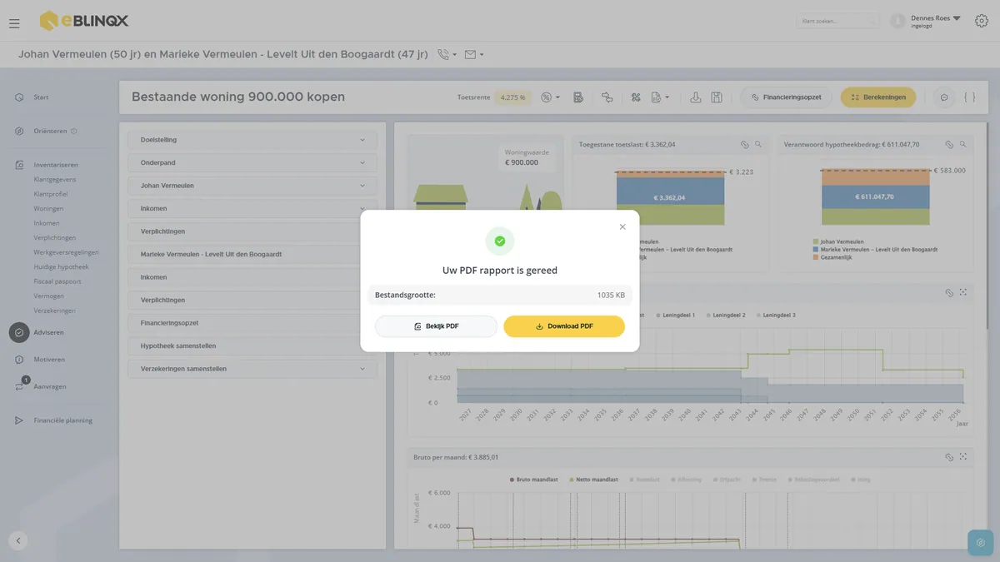
⚙️ IT-30106: Rapportage soepel downloaden en direct als pdf bekijken
Je kunt de rapportage nu zonder onderbreking genereren en downloaden. Daarnaast bekijk je het pdf-overzicht direct in een PDF Reader. Zo heb jij sneller inzicht en kies je eenvoudig of je de rapportage eerst wilt controleren of meteen wilt downloaden. En terwijl het rapport wordt gegenereerd, werk jij gewoon door. Wel zo efficiënt toch?
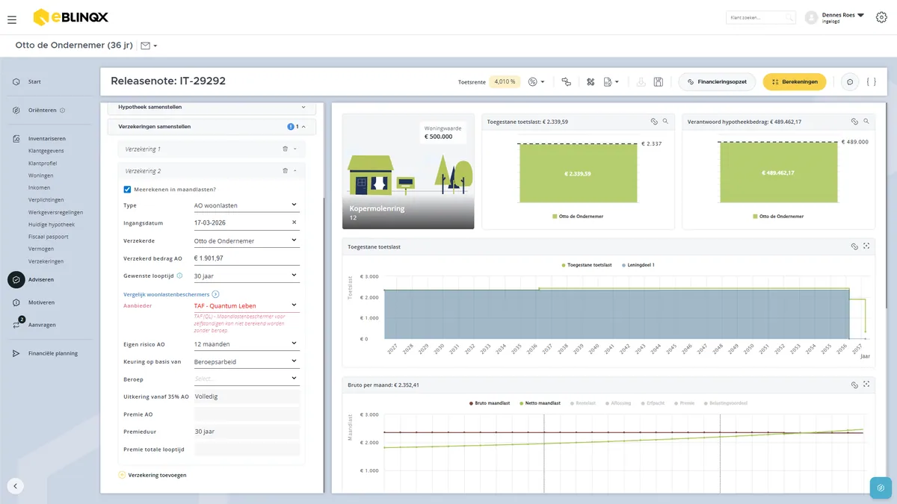
🐞 IT-29292: TAF Maandlastenbeschermer Zelfstandige weer beschikbaar voor ondernemers
Stel je een hypotheekadvies op voor een zelfstandig ondernemer, dan kun je de TAF Maandlastenbeschermer Zelfstandige nu weer eenvoudig selecteren. Ook wordt de bijbehorende AO-premie weer correct opgehaald en getoond. Zo verloopt jouw adviesproces weer soepel van advies tot premie en kun je sneller met een compleet en passend voorstel verder.
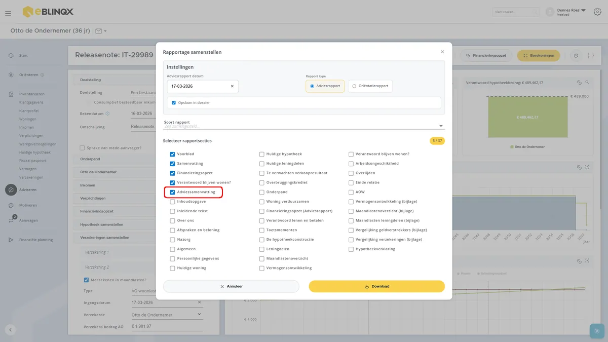
⚙️ IT-29989: Duidelijkere Adviessamenvatting in rapportage
In Rapportage samenstellen vind je het onderdeel nu terug als ‘Adviessamenvatting’ en staat het logisch gepositioneerd tussen ‘Verantwoord blijven wonen’ en ‘Inhoudsopgave’. Zo stel je jouw rapportages nog overzichtelijker samen en werk je sneller met een heldere en consistente structuur, zonder dat de inhoud verandert.
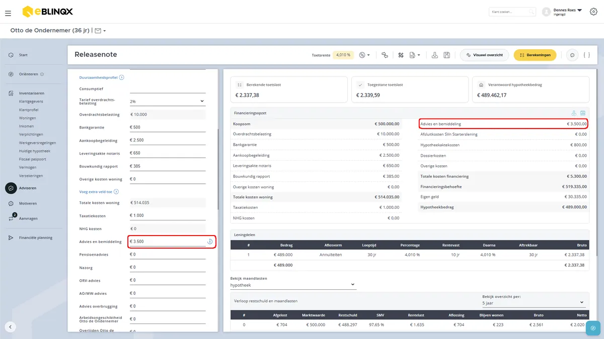
🐞 IT-30078: Correcte verwerking gecombineerd tarief Advies en bemiddeling
Werk je met één gecombineerd tarief voor advies en bemiddeling? Dan zorgt deze update ervoor dat jouw ingestelde bedrag nu overal consequent wordt toegepast. Oude losse kostenposten voor advies- en bemiddelingskosten worden niet meer getoond of automatisch ingevuld in het HDN-aanvraagformulier. Zo werk je met een overzichtelijke kostenstructuur en voorkom je onnodige correcties bij het indienen van aanvragen. 🚀
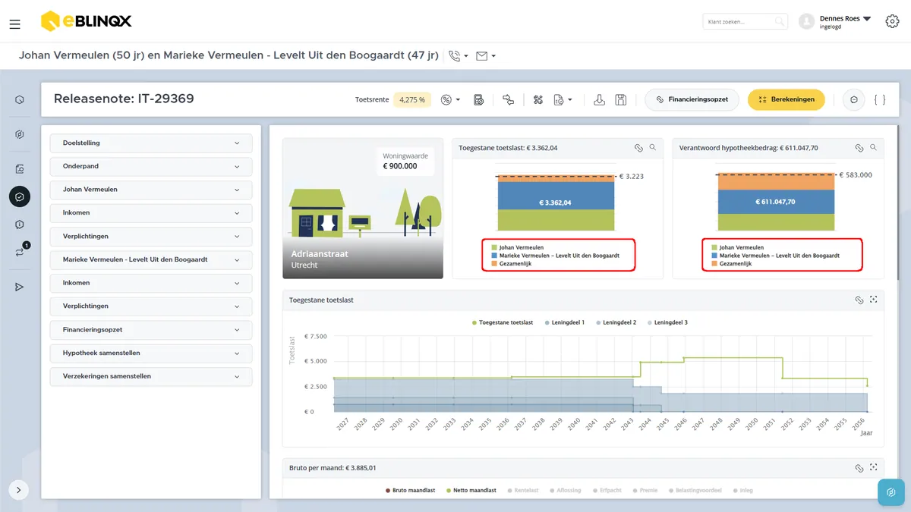
⚙️ IT-29369: Verbeterde leesbaarheid van grafieken in het adviesrapport
Op de pagina ‘Verantwoord lenen en betalen’ zijn de legendes onder de staafdiagrammen overzichtelijker gemaakt. De namen van jou en eventuele mede-aanvragers worden nu netjes onder elkaar weergegeven, zodat alles altijd goed leesbaar blijft – ook bij langere namen. Dat maakt het adviesrapport duidelijker en prettiger om door te nemen.
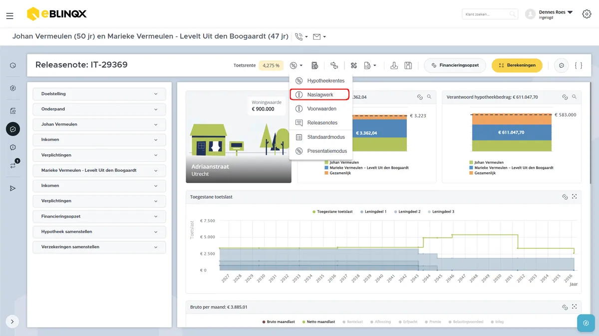
🐞 IT-30018: Altijd toegang tot de actuele SEH Adviespocket
De link naar de SEH Adviespocket is vernieuwd. Je wordt nu direct naar de officiële SEH-pagina geleid, zodat je altijd de meest actuele versie van het naslagwerk bij de hand hebt. Hierdoor hoef je niet meer te zoeken naar de juiste editie en werk je altijd met de nieuwste informatie. 📘
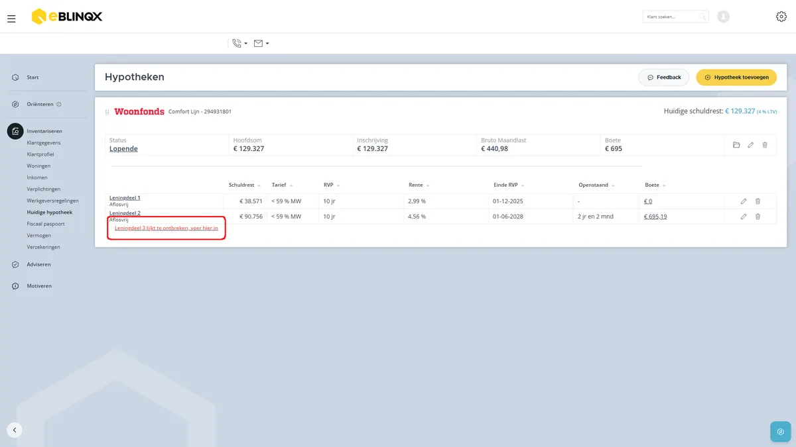
🐞 IT-28452: Correcte verwerking van leningdelen zonder onterechte melding
Voer je een hypotheek in met twee leningdelen, dan werkt dit nu weer precies zoals je verwacht. De onterechte melding dat er een derde leningdeel ontbreekt is opgelost, waardoor je geen workaround meer hoeft te gebruiken met een fictief leningdeel. Zo kun je jouw invoer sneller en zonder verwarring afronden.
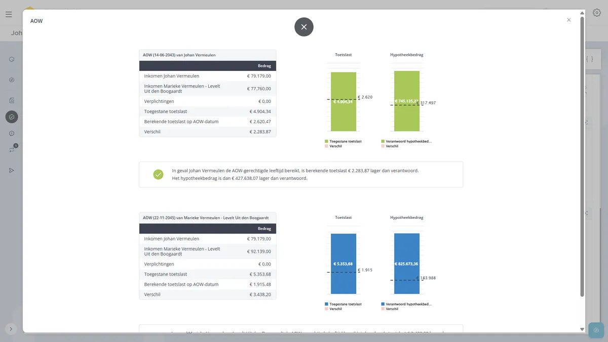
🐞 IT-28815: AOW-details nu ook inzichtelijk bij GHF
Klik je in een GHF-dossier op de AOW-staaf in de grafiek, dan opent nu net als bij CBI direct het verdiepende scherm met alle onderliggende toetslastcijfers. Zo krijg je sneller volledig inzicht en werk je consistent binnen elke adviesmethodiek, zonder verschillen in gedrag of extra handelingen.
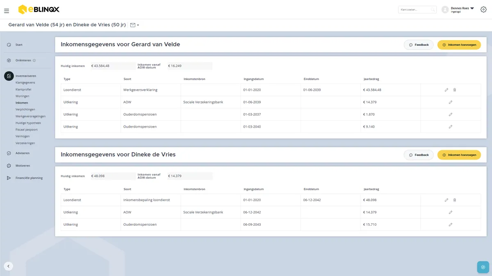
🐞 IT-29747: Correcte verwerking van pensioeninkomen na AOW-datum medeaanvrager
In de inkomensberekening wordt het pensioeninkomen nu volledig en correct meegenomen vanaf het moment dat aanvrager 2 de AOW-leeftijd bereikt. Hierdoor wordt vanaf die datum automatisch het volledige pensioeninkomen – inclusief het aanvullende pensioen – volgens de geldende inkomenslogica samengevoegd bij aanvrager 1. Dit zorgt ervoor dat jouw toetsinkomen na pensionering van beide aanvragers volledig en nauwkeurig wordt berekend en dat je in de inkomensspecificatie een duidelijk en herleidbaar totaalinkomen ziet. Zo kun je rekenen op een betrouwbare doorrekening, zowel in bestaande dossiers als in nieuwe aanvragen met vergelijkbare pensioenconstructies.
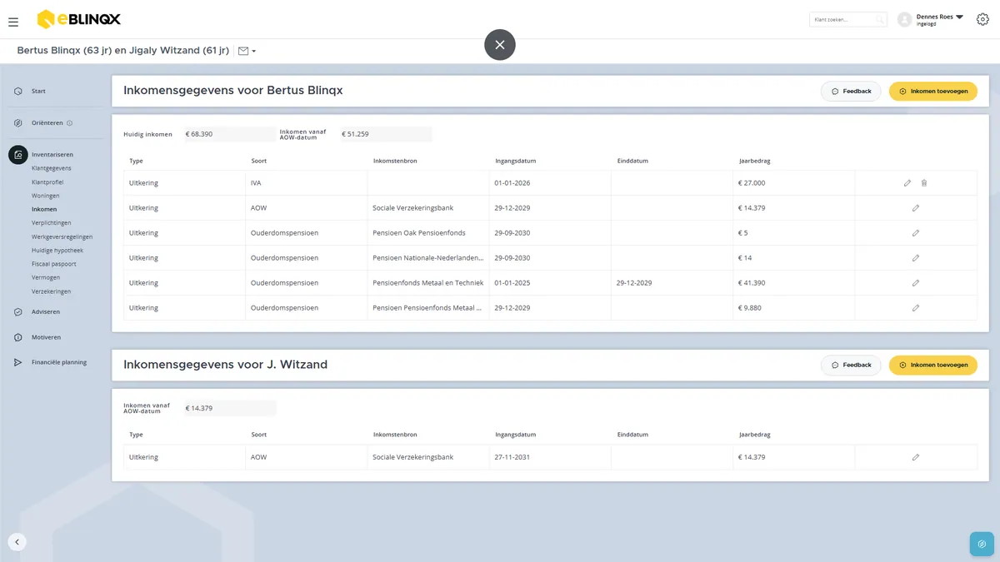
🐞 IT-30032: Correcte verwerking van prepensioen en pensioen in het toetsinkomen
Het systeem verwerkt nu prepensioen en regulier pensioen correct naast elkaar in de inkomensopbouw. Hierdoor wordt prepensioen automatisch meegenomen tot de opgegeven einddatum, terwijl vanaf de pensioenleeftijd de AOW en het reguliere pensioen juist worden verwerkt in het toetsinkomen. Ook een IVA-uitkering blijft gedurende de juiste periode onderdeel van de berekening. Dit zorgt ervoor dat je in zowel de invoerschermen als in het advies en de toetsing altijd een consistente en betrouwbare weergave van het inkomen ziet, waardoor je met vertrouwen een correcte berekening kunt maken voor jouw klant.
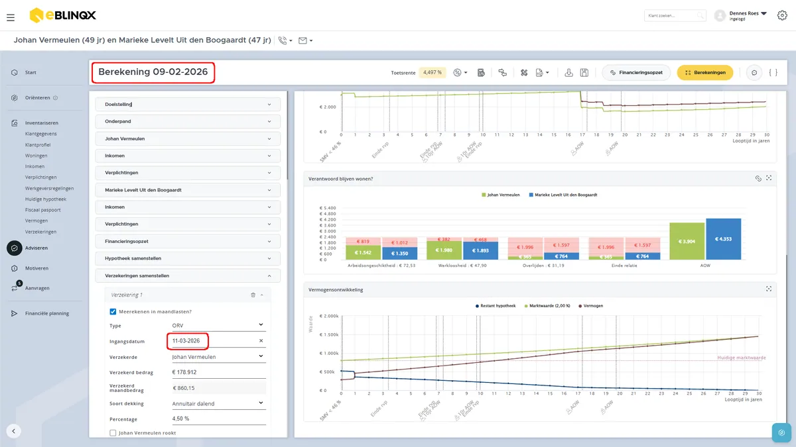
⚙️ IT-30040: Slimmere ingangsdatum bij het samenstellen van verzekeringen
Wanneer je voor het eerst op ‘Verzekeringen samenstellen’ klikt in een berekening waarin nog niet eerder verzekeringspremies zijn berekend, wordt de ingangsdatum van de verzekering nu automatisch gevuld met de huidige systeemdatum. Hierdoor kunnen verzekeraars direct premies berekenen en zie je meteen de juiste resultaten in de premieoverzichten, staafdiagrammen en het adviesrapport. Daarnaast krijg je een duidelijke validatiemelding wanneer een ingangsdatum in het verleden wordt ingevuld, zodat je eenvoudig voorkomt dat er geen premies berekend kunnen worden. Zo kun je verzekeringen sneller en zorgeloos samenstellen.
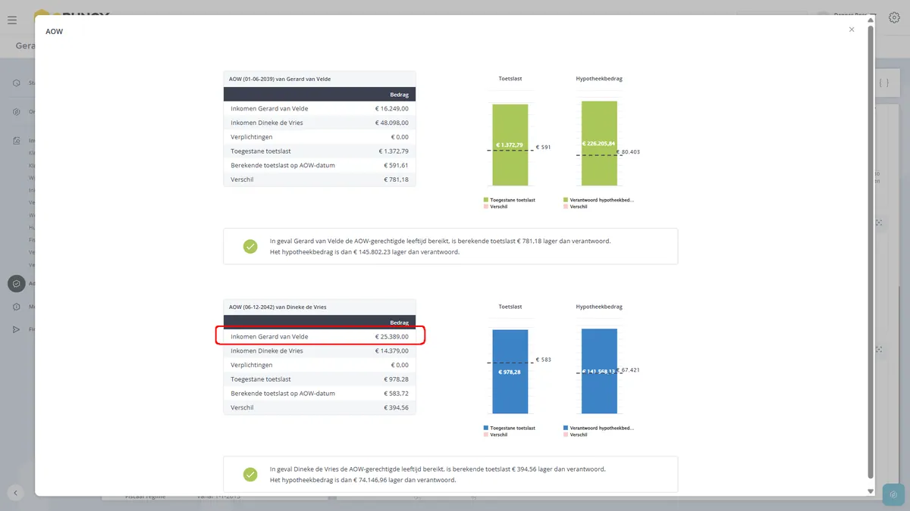
🐞 IT-29747: Pensioeninkomen na AOW-leeftijd correct meegenomen in berekening
Goed nieuws! In situaties waarin aanvrager 2 de AOW-leeftijd bereikt, wordt het volledige pensioeninkomen nu weer correct meegenomen in de berekening van aanvrager 1. Ook het aanvullende pensioen wordt vanaf dat moment automatisch toegevoegd aan het toetsinkomen. Hierdoor zie je in jouw berekeningen direct een volledig en correct opgebouwd totaalinkomen, inclusief AOW, eigen pensioen en eventueel gezamenlijk pensioen. Dit zorgt voor een betrouwbare doorrekening en meer duidelijkheid in zowel bestaande als nieuwe dossiers met vergelijkbare pensioensituaties.
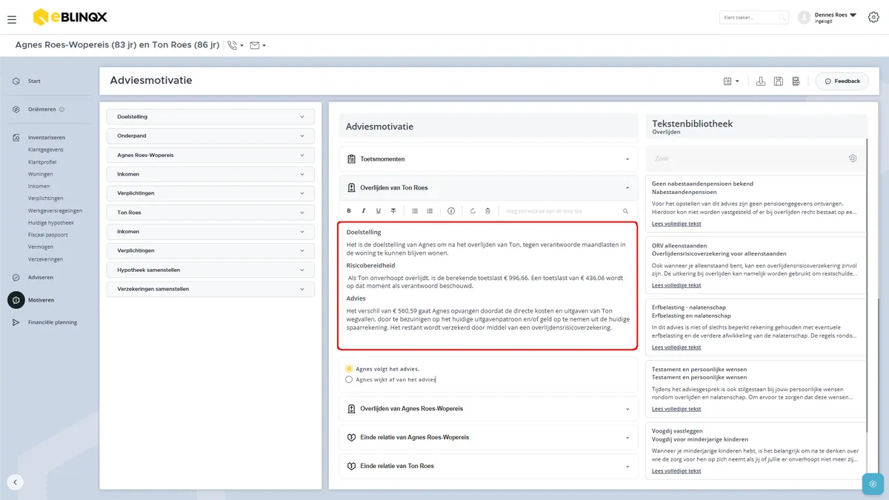
🐞 IT-29061: ANW-tekstblokken automatisch verborgen bij gepensioneerde klant
Bij gepensioneerde klanten worden de standaard ANW-tekstblokken in het onderdeel Overlijden nu niet meer getoond. Omdat klanten die de AOW-gerechtigde leeftijd hebben bereikt niet in aanmerking komen voor een ANW-uitkering, zie je voortaan alleen informatie die echt relevant is voor jouw advies. Zo blijft jouw adviesoverzicht duidelijker, voorkom je verwarring bij de klant en werk je nog efficiënter. 🚀
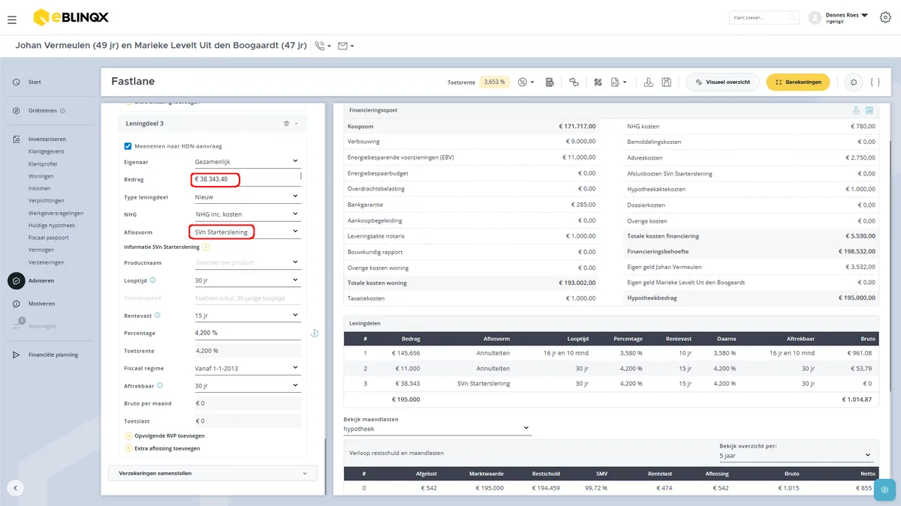
🐞 IT-29979: Starterslening-validatie houdt nu correct rekening met EBV
Bij een berekening met een starterslening en energiebesparende voorzieningen (EBV) kon het voorkomen dat je onterecht een foutmelding kreeg over de maximale 20% starterslening. Dit is nu opgelost. De validatie houdt voortaan rekening met de juiste grondslag: koopsom + verbouwing + EBV. Daardoor kun je weer probleemloos een financieringsopzet genereren wanneer jouw starterslening binnen deze grens valt. Ook wordt de EBV correct meegenomen in de financieringsopzet, zodat deze duidelijk zichtbaar is voor zowel de hypotheekverstrekker als SVn.
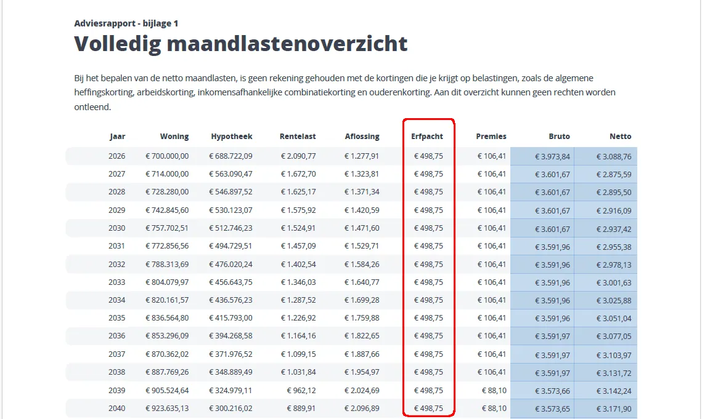
🐞 IT-28939: Erfpachtcanon correct opgenomen in maandlastenoverzicht
Je maandlastenoverzicht is nu weer volledig en consistent. Wanneer er sprake is van erfpachtcanon, wordt dit bedrag automatisch meegenomen in de bijlage ‘Volledig maandlastenoverzicht’. Zo sluit jouw overzicht altijd perfect aan op de berekende maandlasten in het dossier en weet je zeker dat je klant een compleet en betrouwbaar beeld krijgt van de totale maandlasten.
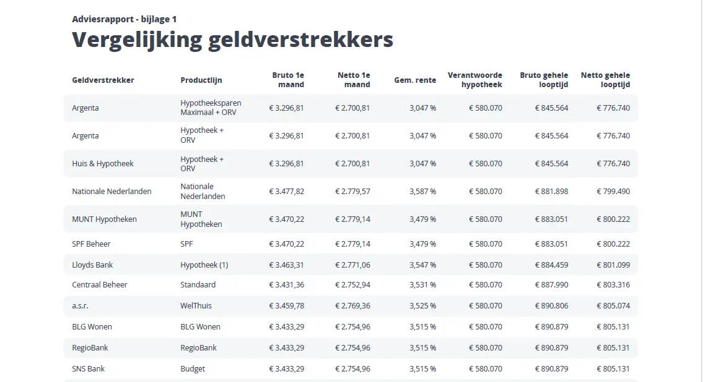
⚙️ IT-29979: Overzicht geldverstrekkers duidelijker en rustiger in adviesrapport
Het overzicht ‘Geldverstrekkers vergelijken’ in het adviesrapport is verbeterd zodat het overzichtelijker en prettiger leesbaar is voor jou en je klant. Bedragen worden nu zonder onnodige decimalen weergegeven, de kolom Toetsrente is verwijderd en de benaming Verantwoord hypotheekbedrag is vereenvoudigd naar Verantwoorde hypotheek. Daarnaast hebben we de opmaak verbeterd, waardoor de fontgrootte nu altijd consistent is – zowel bij een losse download als in een volledig adviesrapport. Hierdoor presenteer je jouw advies nog duidelijker aan je klant.
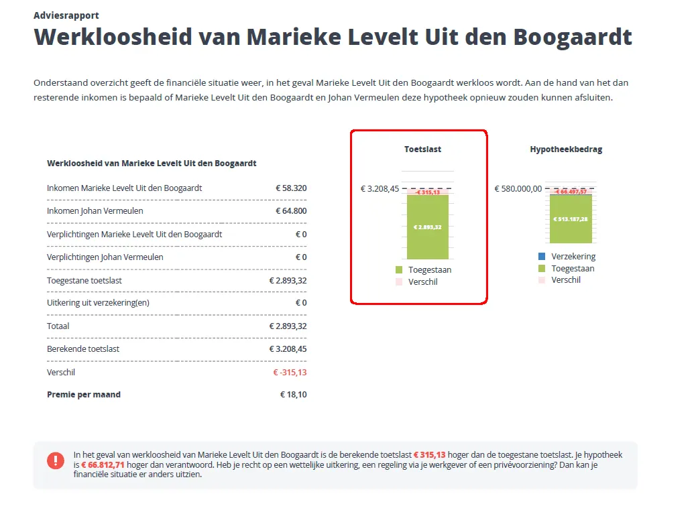
🐞 IT-29436: GHF-life-events nu compleet zichtbaar in het adviesrapport
In het GHF-adviesrapport worden de staafdiagrammen nu ook correct weergegeven bij de life-events arbeidsongeschiktheid, werkloosheid en overlijden voor zowel aanvrager als partner. Daarbij worden de diagrammen automatisch gevuld met de berekende gegevens, zoals verzekeringspremies waar dat van toepassing is, en sluiten ze netjes aan op de opmaak van de andere life-events in het rapport. Zo krijg jij in nieuw gegenereerde adviesrapporten weer een volledig en consistent overzicht, waardoor je jouw advies nog duidelijker en prettiger kunt presenteren.
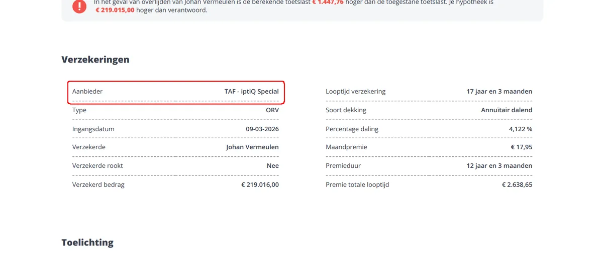
🐞 IT-26711: Juiste aanbieder van de overlijdensrisicoverzekering zichtbaar in het adviesrapport
In het adviesrapport bij het thema Overlijden wordt nu ook voor de partner de daadwerkelijk gekozen aanbieder correct weergegeven. Daardoor zie je direct de juiste naam uit de sidebar terug, zoals Allianz (Overlijdensrisicoverzekering), in plaats van alleen de algemene omschrijving. Dat zorgt voor extra duidelijkheid in jouw adviesrapport en helpt je om klantgesprekken nog prettiger en zorgelozer te voeren.
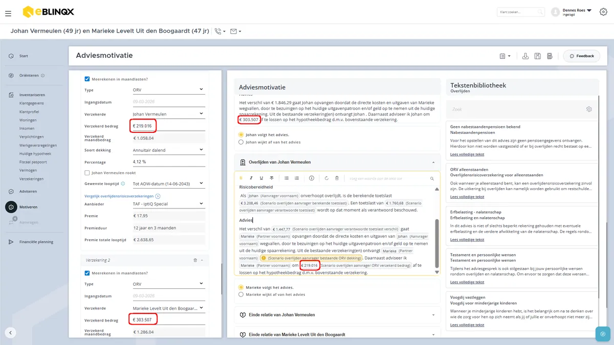
🐞 IT-29435: Verbeterde adviesmotivering GHF bij overlijden partner
De adviesmotivering volgens de GHF-methodiek is aangescherpt bij overlijden van de partner. Je ziet nu een correct geformuleerde tekst én een inhoudelijk juiste berekening, zodat jouw adviesdocumenten nog duidelijker en betrouwbaarder zijn voor jou en je klant.
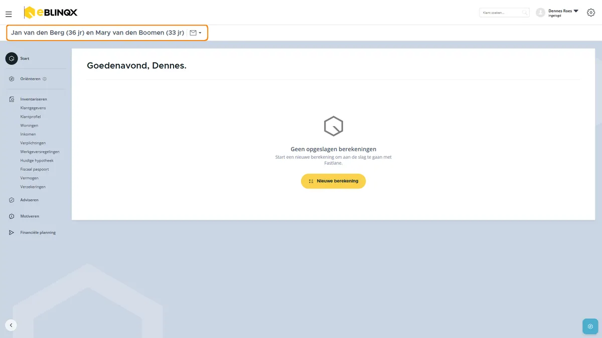
🐞 IT-29957: Correcte weergave partnernaam in de titelbalk
Vanaf nu zie je in de titelbalk bij de partner netjes de voornaam in plaats van alleen de voorletter(s), als de roepnaam niet is ingevuld. Dat maakt de naamweergave consistenter en je herkent jouw klantgegevens sneller en makkelijker.
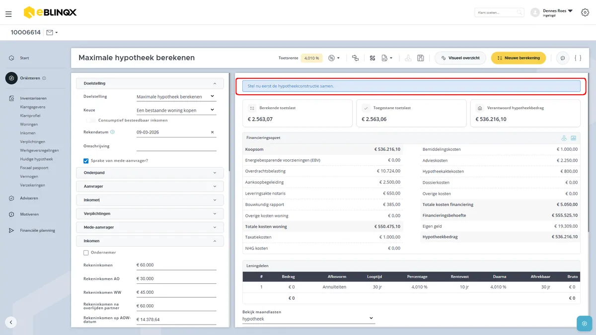
⚙️ IT-29733: Duidelijkere instructie bij samenstellen hypotheekconstructie
De melding in de blauwe balk is verduidelijkt. In plaats van een algemene waarschuwing zie je nu direct wat je moet doen: eerst de hypotheekconstructie samenstellen. Zo weet je sneller wat de volgende stap is en kun je efficiënter verder in jouw adviesproces.
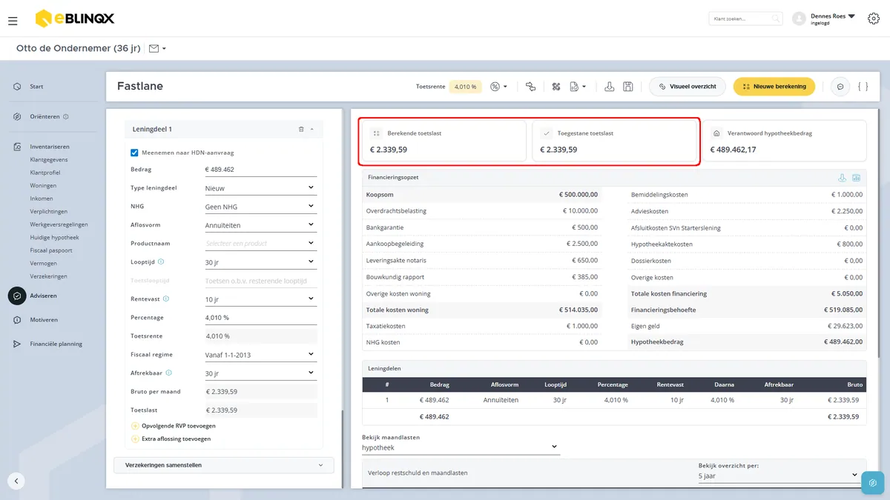
🐞 IT-29730: Correcte weergave toetslast en altijd rapport downloaden mogelijk
Je ziet nu alleen een rode melding wanneer de berekende toetslast écht hoger is dan toegestaan. Is de toetslast gelijk of lager? Dan blijft de weergave netjes neutraal. Daarnaast kun je het rapport voortaan altijd downloaden, ongeacht de uitkomst. Zo werk je zonder onnodige blokkades en met een duidelijke, betrouwbare signalering.
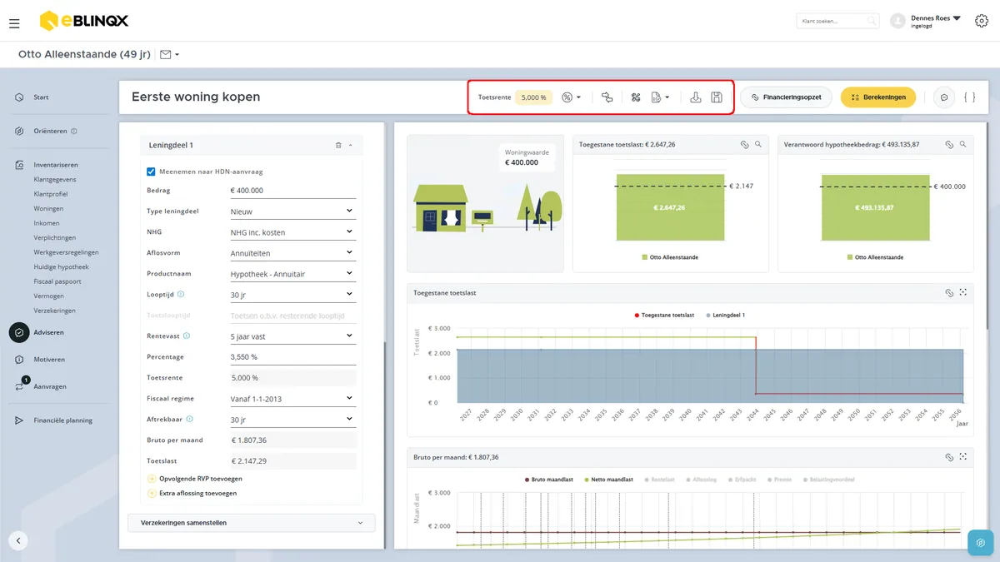
⚙️ IT-29920: Overzichtelijkere toolbar voor meer werkruimte
De toolbar is vereenvoudigd door het aantal knoppen en dropdowns te verminderen. Hierdoor oogt de interface rustiger en blijft alles ook op kleinere schermen prettig bruikbaar. Zo houd je meer overzicht en kun je nog efficiënter werken in jouw adviesproces.
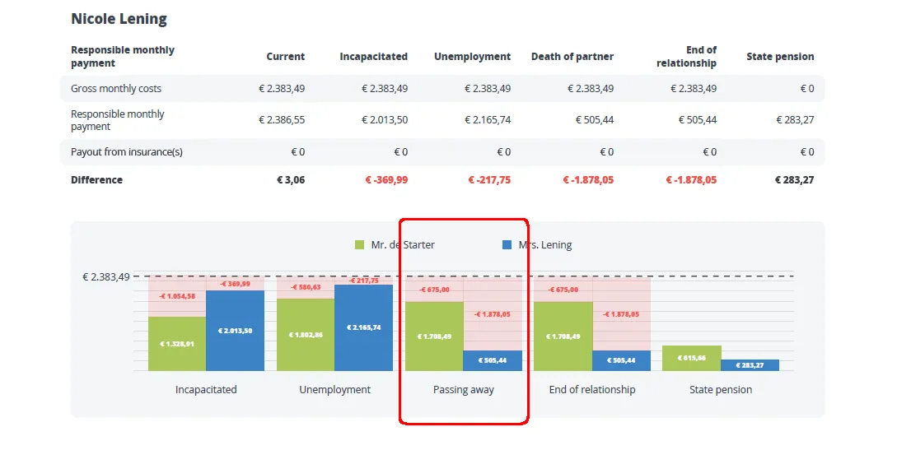
🐞 IT-26097: Volledige weergave overlijdensscenario in Engelstalige PDF
De Engelstalige PDF-samenvatting toont nu ook bij alleenstaande aanvragers het overlijdensscenario op de pagina Verantwoord blijven wonen. Zo heb je tijdens adviesgesprekken altijd een complete en consistente visualisatie van de risico’s, ongeacht de taal van het rapport.
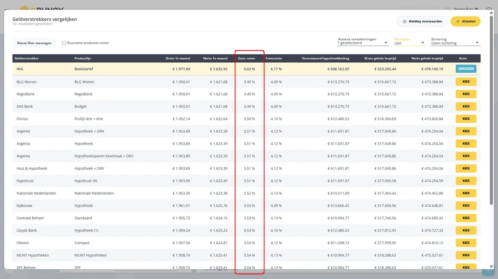
🆕 IT-29665: Gewogen gemiddelde hypotheekrente toegevoegd aan vergelijk en adviesrapport
Je krijgt nu veel beter inzicht in de écht relevante rente! In het horizontale vergelijk is een extra kolom toegevoegd: ‘Gewogen gemiddelde hypotheekrente’. Deze toont per geldverstrekker het gewogen gemiddelde rentepercentage over de geselecteerde leningdelen, gebaseerd op de daadwerkelijk aangeboden rentes en gewogen op leningdeelbedrag. Daardoor zie je bij rentevastperiodes korter dan 10 jaar niet langer standaard 5% toetsrente terug, maar gewoon de echte rente die voor jouw klant geldt. Ook in het adviesrapport is dit doorgevoerd: de kolom ‘Toetsrente’ is volledig vervangen door ‘Gewogen gemiddelde hypotheekrente’, met exact dezelfde berekeningslogica als op het scherm. Zo sluit het rapport perfect aan op wat je in de software vergelijkt en wordt jouw advies direct duidelijker en beter onderbouwd. Uiteraard blijft de bestaande toetsrente-functionaliteit voor acceptatie- en leennormberekeningen ongewijzigd, en de nieuwe kolom wordt netjes meegenomen in de PDF-export van het adviesrapport.
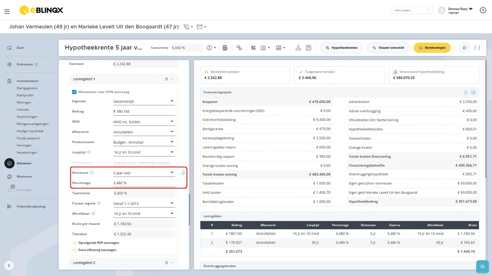
🐞 IT-29865: Correcte rentevastperiodes bij ingeladen hypotheken
Goed nieuws! Bij het inladen van een lopende hypotheek wordt de combinatie van geldverstrekker en product nu direct correct herkend en gekoppeld. Daardoor zie je bij het aanpassen van de rentevastperiode voortaan alleen de rentevastperiodes die daadwerkelijk horen bij het specifieke product. Geen generieke lijst meer van variabel tot 30 jaar vast, maar direct het juiste en relevante aanbod in beeld. Dit werkt nu precies hetzelfde als wanneer je handmatig van product wisselt. Daarnaast is het fallback-gedrag verbeterd: als productherkenning onverhoopt niet lukt, wordt dit expliciet gelogd of wordt er een duidelijke default gekozen. Met extra testen is geborgd dat het inladen van een lopende hypotheek dezelfde productmapping en rentevastperiode-filtering oplevert als handmatige selectie. Zo kun jij rekenen op consistente, betrouwbare uitkomsten en werk je sneller en met meer vertrouwen in jouw advies.
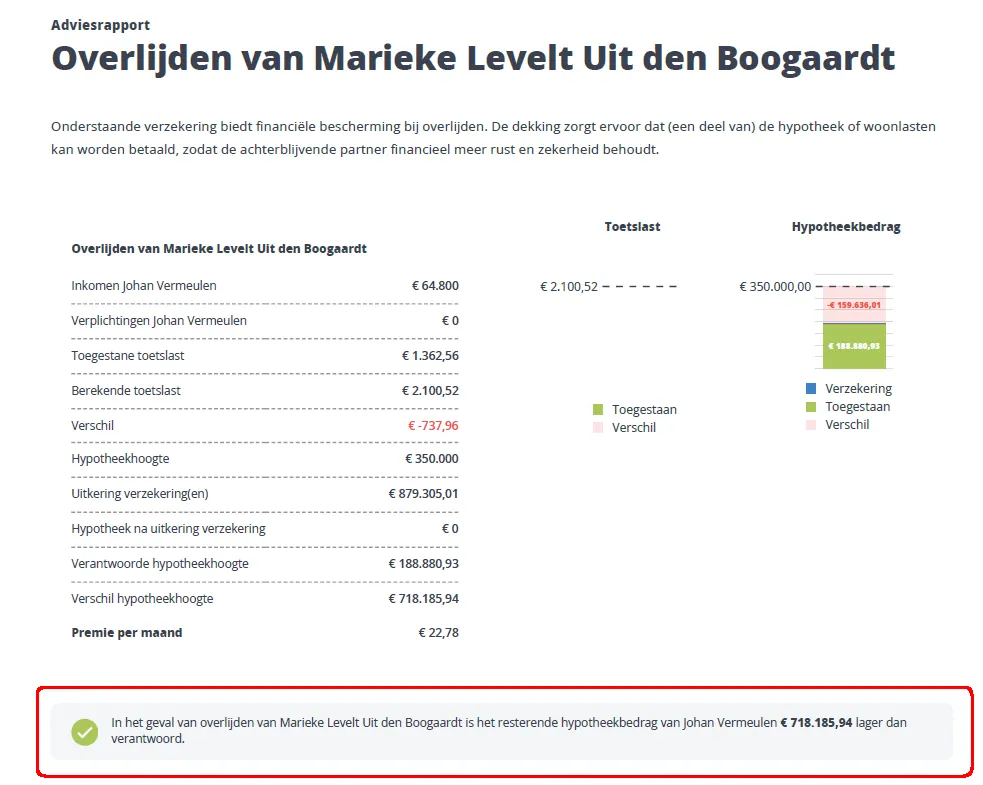
⚙️ IT-29362: Duidelijkere weergave Overlijden (GHF) met visuele statusindicator
Binnen het thema Overlijden volgens de GHF-methodiek is het rapport verder geoptimaliseerd voor een heldere en professionele uitstraling. De toelichtende tekst over het buiten beschouwing laten van de eventuele Anw-uitkering is verwijderd, waardoor jouw rapportages overzichtelijker en beter afgestemd zijn op de gewenste inhoud. Daarnaast zie je nu in één oogopslag of het resterende hypotheekbedrag na overlijden verantwoord is. Bij de beoordeling wordt een duidelijke visuele statusindicator getoond: een groen bolletje met vinkje wanneer het resterende bedrag lager dan verantwoord is en een rood bolletje met wit uitroepteken wanneer het hoger dan verantwoord is. Deze herkenbare iconen worden consistent toegepast in zowel het rapport als in de preview- en schermweergaven. Zo krijg je direct extra duidelijkheid in jouw analyse en presenteer je jouw advies nog krachtiger en overzichtelijker aan je klant.
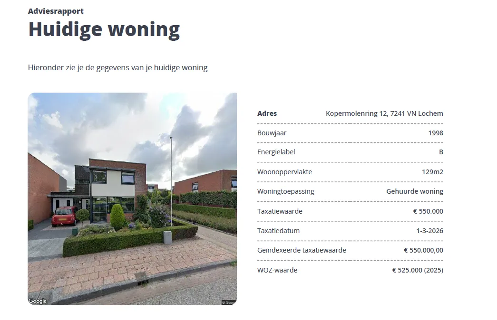
🐞 IT-29565: Correcte weergave huurwoning in het adviesrapport
In dossiers waarin je de huidige woning als Gehuurde woning hebt vastgelegd, wordt deze in het adviesrapport nu ook altijd correct als huurwoning gepresenteerd. Daarmee is de rapportage volledig in lijn met jouw invoer en voorkom je verwarring tijdens het adviesgesprek. Daarnaast wordt er bij een huurwoning geen eigendomsdatum meer getoond. Zo sluit de inhoud van het rapport logisch en inhoudelijk juist aan op de werkelijke situatie van jouw klant. Ook binnen een actieve berekening Aankoop eigen woning blijft de classificatie van de huidige woning consistent en betrouwbaar. Na een herberekening genereren bestaande dossiers automatisch een correct rapport. Zo kun je met een gerust hart vertrouwen op een duidelijke, kloppende en professionele rapportage richting jouw klant.
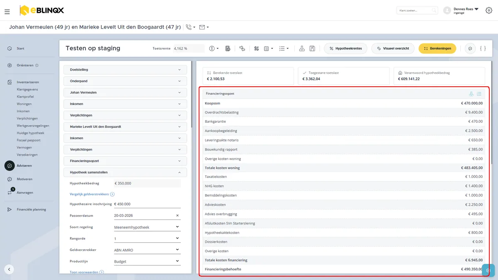
⚙️ IT-29814: Verbeterde leesbaarheid met zebra striping in ‘Alles onder elkaar’
Werk je in de financieringsopzet met de weergave ‘Alles onder elkaar’? Dan profiteer je nu van subtiele zebra striping. Door afwisselende achtergrondkleuren per regel zie je in één oogopslag welke omschrijving bij welk bedrag hoort. Dit zorgt voor extra overzicht en maakt jouw adviesgesprek nóg duidelijker voor jou én je klant. De zebra striping wordt automatisch toegepast wanneer je kiest voor ‘Alles onder elkaar’ en sluit naadloos aan bij de vertrouwde eBlinqx Hypotheekadvies-stijl en toegankelijkheidsrichtlijnen. Uiteraard blijven alle berekeningen en databinding ongewijzigd en werkt de weergave soepel bij het toevoegen of verwijderen van regels. Ook in ondersteunde browsers en in de PDF-/printweergave blijft alles strak en consistent zichtbaar. Zo presenteer je jouw financieringsopzet nog overzichtelijker en professioneler.
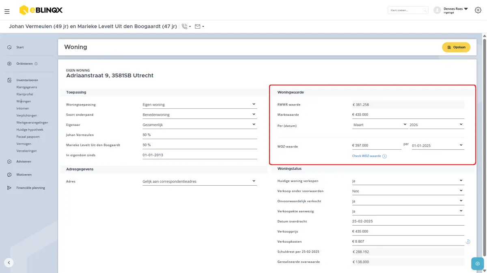
⚙️ IT-29866: Woningenformulier vernieuwd
In het woningenformulier hebben we een aantal mooie verbeteringen doorgevoerd om jouw invoer nóg sneller, duidelijker en intuïtiever te maken. De RWWR-waarde en de marktwaarde staan nu overzichtelijk bovenaan het formulier, zodat je direct met de belangrijkste waardes werkt. De datum waarop je de marktwaarde hebt geïnventariseerd wordt automatisch gevuld met de huidige maand en het huidige jaar. Dat scheelt je weer een extra handmatige stap. Ook is het WOZ-veld verduidelijkt met de toevoeging van het woordje ‘per’, zodat meteen helder is op welk peiljaar de waarde op betrekking heeft. Verkoopt je klant de huidige woning? Dan nemen we automatisch de marktwaarde over als verkoopprijs wanneer dit veld nog leeg is. Wel zo efficiënt en prettig in gebruik.
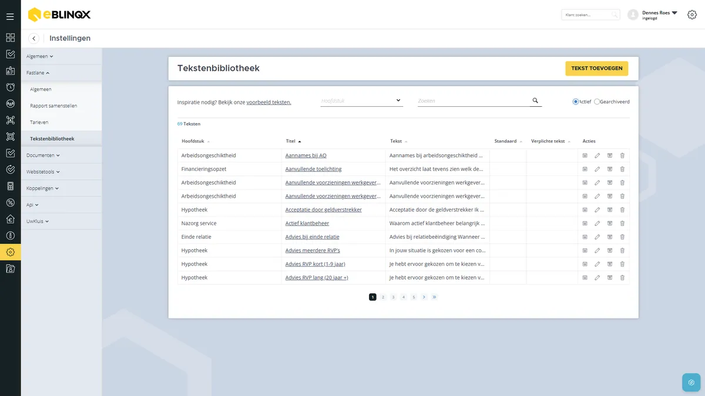
⚙️ IT-29790: Vernieuwde techniek achter de tekstenbibliotheek
De invoervelden in de tekstenbibliotheek – waarmee je eenvoudig je eigen teksten toevoegt aan het adviesrapport – zijn technisch vernieuwd. Achter de schermen is de onderliggende techniek gemoderniseerd, terwijl alle bestaande functionaliteit, validaties en foutmeldingen volledig behouden zijn gebleven. Als alles goed is gegaan, merk je hier als gebruiker helemaal niets van – en dat is precies de bedoeling. Zo blijft jouw werkwijze vertrouwd, terwijl de software onder de motorkap klaar is voor de toekomst.
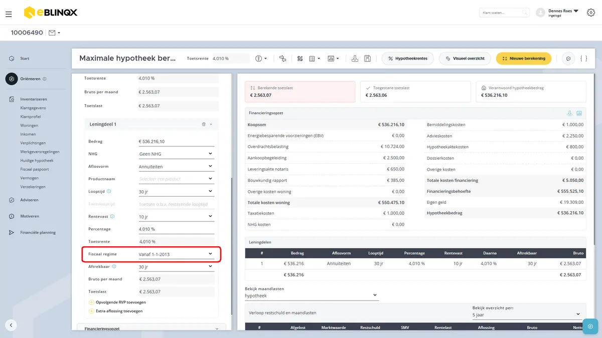
🐞 IT-29715: Automatisch ingevuld fiscaal regime bij aanpassen hypotheekconstructie
Werk je met de doelstelling ‘Maximale hypotheek berekenen’ en maak je vanuit de melding ‘Let op: hypotheekconstructie dient te worden aangepast.’ een leningdeel aan? Dan wordt het veld Fiscaal regime nu automatisch gevuld met Vanaf 1-1-2013. Zo kun je direct verder met je advies, bespaar je tijd en voorkom je onnodige handmatige correcties. Dat werkt wel zo prettig en efficiënt in jouw adviesproces.
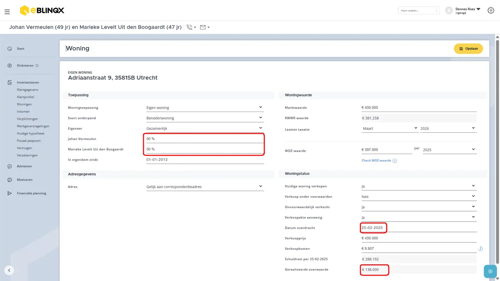
🐞 IT-28840: Correcte verwerking eigen geld en opschonen overwaarde- en overbruggingssituatie na definitieve verkoop
Wanneer een onderpand definitief is verkocht en de overdrachtsdatum vóór de rekendatum ligt, wordt het eigen geld uit de verkoop nu volledig en automatisch verwerkt in de financieringsopzet én correct verdeeld over de aanvragers volgens de eigendomsverhouding, bijvoorbeeld 50/50 bij samenwonenden. Zo weet je zeker dat jouw berekening direct klopt en aansluit op de werkelijke situatie.
Daarnaast is de weergave in Woning(en) en de Financieringsopzet volledig opgeschoond zodra de verkoop definitief is. “Potentiële overwaarde” wordt automatisch aangepast naar “Gerealiseerde overwaarde”, zodat je altijd de juiste terminologie gebruikt in jouw advies. Regels zoals “Mogelijke overbrugging (100%)” en “Overbruggingshypotheek (0,00)” worden niet meer getoond wanneer overbrugging niet van toepassing is. Dat zorgt voor een overzichtelijke en professionele opzet zonder overbodige informatie.
Markeer je een onderpand achteraf als definitief verkocht? Dan wordt de financieringsopzet automatisch opnieuw berekend. Eventuele overbruggingscomponenten verdwijnen direct en er blijft geen te overbruggen bedrag staan. Zo werk je sneller, foutloos en met volledige consistentie in alle relevante schermen.
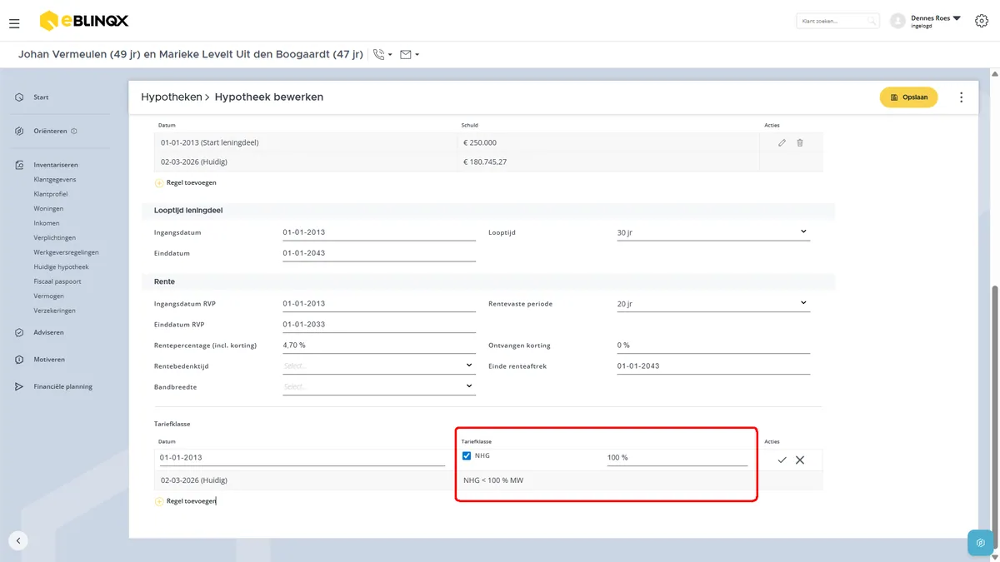
🐞 IT-29882: Tariefklasse keuze vereenvoudigd (Executiewaarde verwijderd)
Bij het instellen van de tariefklasse in de inventarisatie onder ‘Hypotheken’ zie je nu alleen nog de relevante opties, zoals NHG en het percentage ten opzichte van de marktwaarde. De executiewaarde is verwijderd, waardoor je sneller en overzichtelijker werkt. Dit voorkomt verwarring en helpt je om eenvoudiger de juiste keuze te maken voor jouw advies.